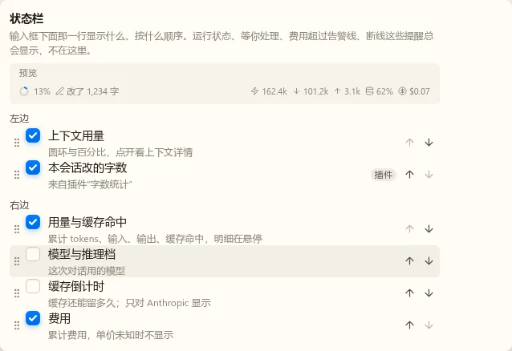
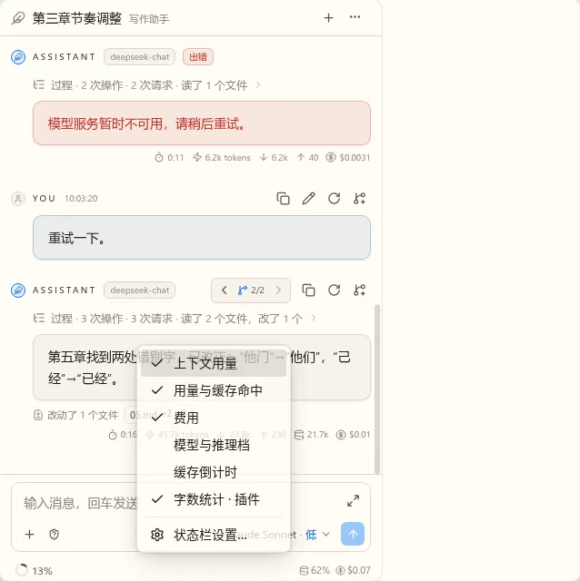

t37 对话状态栏的自定义
界面是 t29 评审板第 1 轮已经定下的稿（图沿用那一轮的）。这一版把它连同实现方案一起摆出来，请看两道待定的问题；其余写明“已定”的只是让你核对，不需要再答。
待定设置里怎样排序？
推荐 A：原生拖动加“上移、下移”按钮。拖动是你定下的做法；仓库里没有现成的排序列表，原生拖放几十行就够，不为它引库。按钮同时是键盘与触屏的路径，所以不是可有可无的。
A 拖动加上移、下移
每行左边是拖动柄，右边是上移、下移按钮。拖动只在同一侧（左边或右边）内排序，不能拖到另一侧。图见下面“设置里的样子”。
B 只做上移、下移
去掉拖动柄，只留按钮。省一块代码与测试；每一项最多十来个，按钮足够，但与你之前说的“拖动或上移下移”相比少了拖动。
待定缓存倒计时的数据从哪来？
推荐 A：按“最近一次回复的时间加 5 分钟”估，只对接口是 Anthropic 的服务商显示。服务商不会告诉我们缓存还剩多久，只能估。其它服务商没有明确的保留规则，这一项在它们那里不显示（即使在设置里勾上了）。
A 估算，只给 Anthropic
显示“还剩 3:12”，到点变成“已过期”，提示下一次请求会重新写缓存。数字是估的：用了网关、或服务商改了保留时间，就不准。Spec 与代码注释都写明“是估计”。
B 这一版不做缓存倒计时
目录里先只有上下文、用量、费用、模型四项（外加插件的项）。不会有估错的风险；以后服务商把缓存剩余时间放进响应里时再加。
已定设置里的样子
新分区“状态栏”（AI 一组）：顶上一条预览，下面“左边”“右边”两组，每行一个勾选加说明、插件的项标“插件”、拖动柄与上移下移。全局一份，存用户设置。

已定右键菜单
在状态栏上右键，弹出勾选菜单，列出全部可选项（插件的项标“插件”），最后一项“状态栏设置…”打开上面的设置页。勾一下立刻生效，写进同一份设置。

已定改过之后与窄的时候
缺省与现在完全一样，升级后不变。右栏窄时，右边按顺序从前往后收进悬停，费用最后收。

| 可选的项 | 在哪一边 | 缺省 |
|---|---|---|
| 上下文用量 | 左 | 开 |
| 用量与缓存命中（累计、输入、输出、缓存命中合成一项） | 右 | 开 |
| 费用 | 右 | 开 |
| 模型与推理档 | 右 | 关 |
| 缓存倒计时（见上面的待定） | 右 | 关 |
| 插件经贡献点加的项（标“插件”） | 插件声明，左或右 | 插件声明，缺省关 |
- 总显示、不能关的提醒：运行阶段与用时、等你处理、等重发、费用超过告警线、“全部放行”警告、非默认模式标记、断线。
- 每一项的左右由目录定，不能在两边之间移动。
- 不做：配一条命令（Claude Code 那种）、5 小时与 7 天限额、每个会话单独一份设置。
已定怎么做（要点，全文见计划）
- nb-agent-ui 里一个纯函数把“内置五项加插件的项”和用户设置合成要显示的清单；设置为空时就是现在的状态栏。设置只记改过的顺序与显隐。
- 状态栏组件把五个内置项拆开，按清单画；窄时用 ResizeObserver 量宽度、从前往后收进悬停。
- 新贡献点
agent.statusItems给插件加项；新用户设置项nbook.agent/statusLine。 - 分五片实施，每片一个提交，片内跑所改包的全量测试与覆盖它的 e2e。